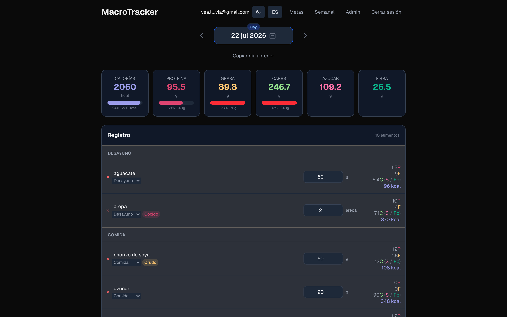
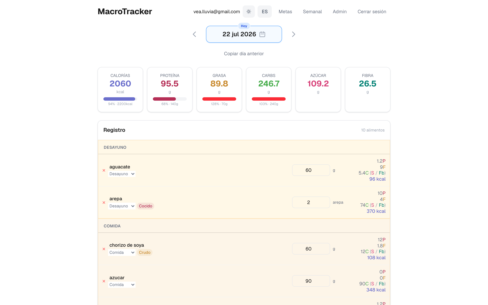
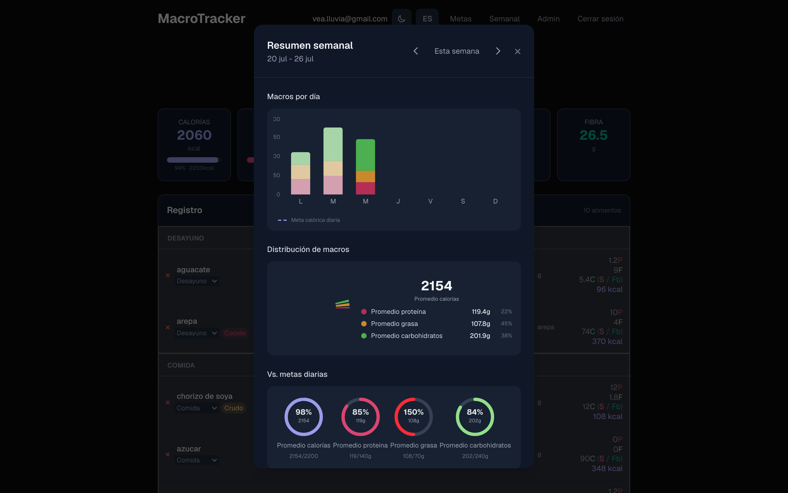
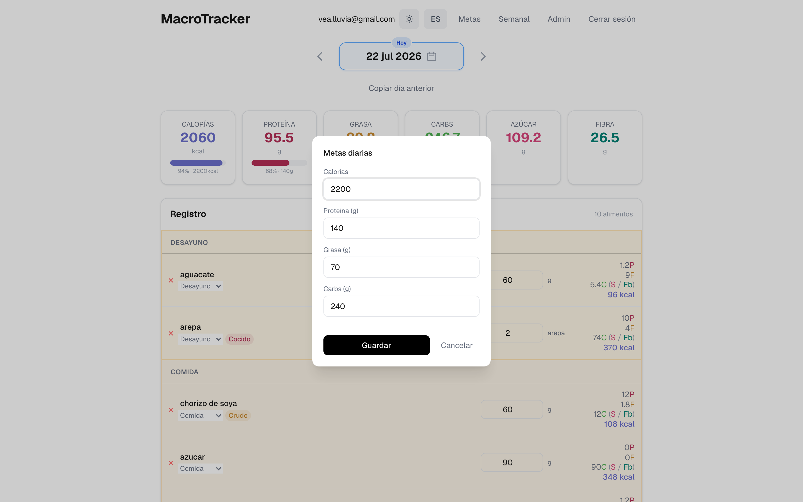
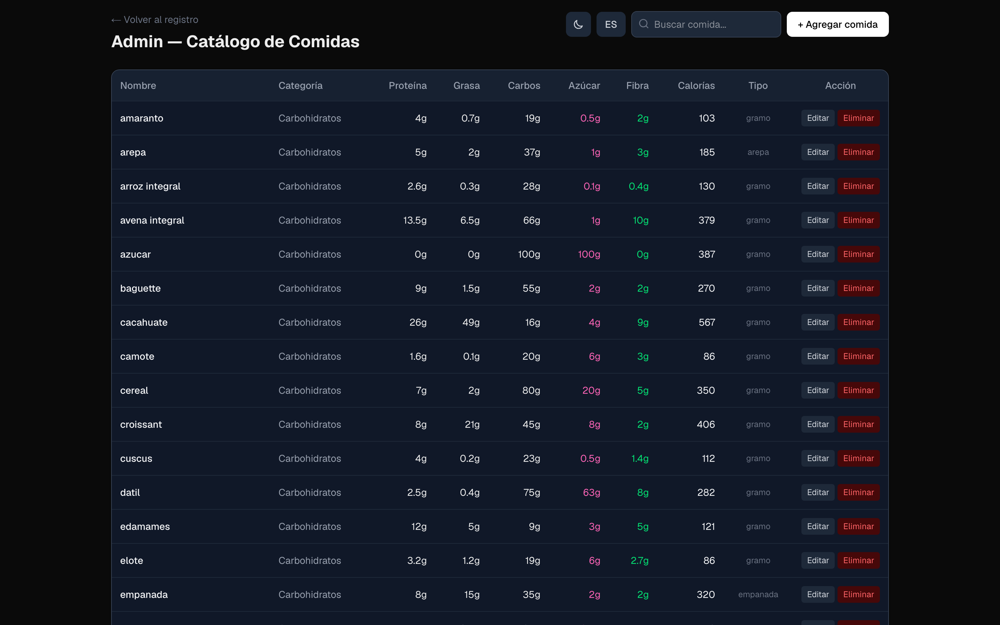
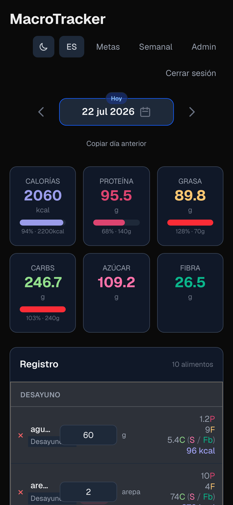

Your macros. Your data. Zero noise.
A minimalist, bilingual food log with automatic macro tracking. No ads, no subscriptions — your data lives in your own PostgreSQL database.
- Self-hosted
- Bilingual ES/EN
- Dark mode
- PWA

See it in action





Everything you need, nothing you don't
Automatic macros
Log a food, get calories, protein, fat, carbs, sugar and fiber instantly.
Daily goals
Custom calorie and macro targets with live progress bars.
Bilingual search
Find any food in Spanish or English, with a fixed search bar and / shortcut.
Date navigation
Review past days, edit or delete entries, copy a full day in one click.
Favorites & recents
Pin your go-to foods and re-log recent items in seconds.
Dark & light mode
Adaptive theme with system preference detection and zero flash.
Built with a serious stack
- Next.js 16
- React 19
- PostgreSQL
- Drizzle ORM
- Tailwind CSS 4
- next-intl
- Recharts
- Playwright + Vitest
- Docker